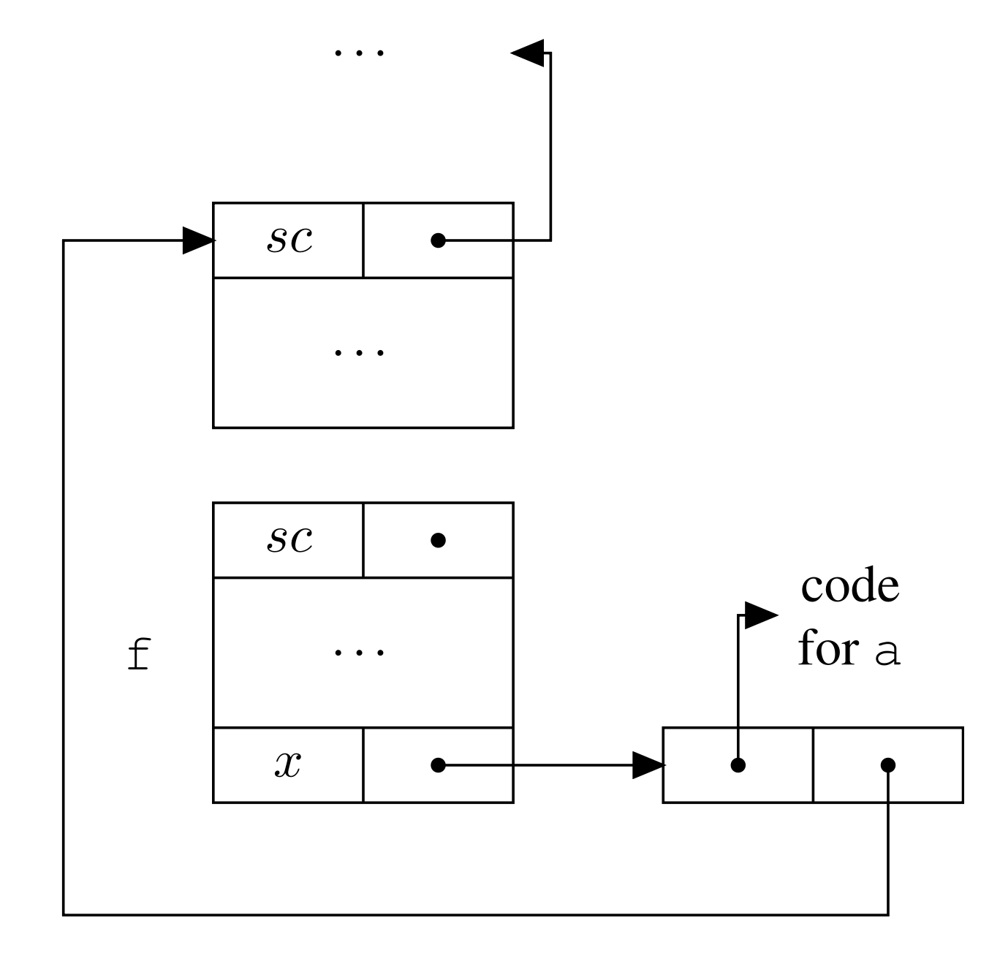
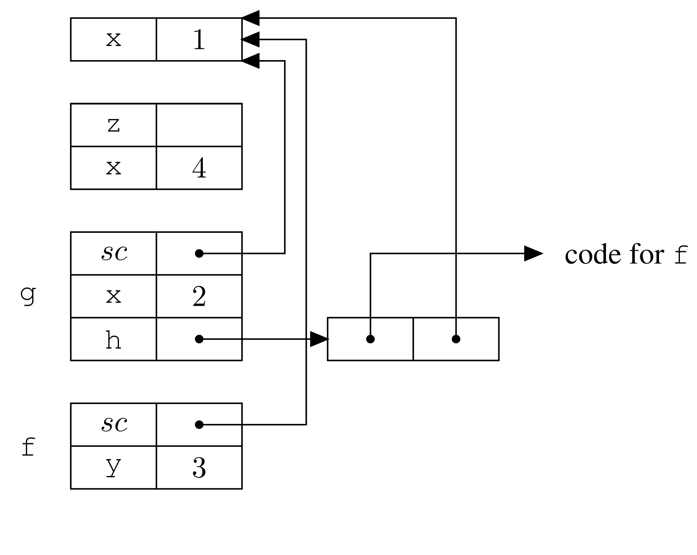

Trường ĐH Công nghệ – Đại học Quốc gia Hà Nội
Trừu tượng hóa: che giấu chi tiết, giữ lại ý chính.
int foo (int n, int a) { // Header
int tmp = a; // Body
if (tmp == 0) return n;
else return n + 1;
}
int how_many_times(){
static int count;
/* static được khởi tạo 1 lần */
return count++;
}
void increment(int x) {
x = x + 1; // chỉ sửa bản sao cục bộ
}
int main() {
int a = 5;
increment(a);
// a vẫn bằng 5 (không thay đổi)
}
void swap(int& x, int& y) {
int temp = x;
x = y;
y = temp;
}
int a = 1, b = 2;
swap(a, b); // gọi trực tiếp, không cần &a
// a = 2, b = 1
void print_info(const std::string& s) {
std::cout << s << std::endl;
// s = "khác"; // lỗi: không được sửa
}
void show(const int x) {
std::cout << x << std::endl;
// x = 99; // lỗi biên dịch
}
std::string name = "Alice";
print_info(name); // không sao chép chuỗi
show(42); // 42 được sao chép vào x
def increment(x):
x = x + 1 # tạo đối tượng mới, rebind x cục bộ
a = 5
increment(a)
print(a) # vẫn là 5 — giống call by value!
def append_zero(lst):
lst.append(0) # sửa đối tượng được chia sẻ
L = [1, 2, 3]
append_zero(L)
print(L) # [1, 2, 3, 0] — L bị thay đổi!
| Chế độ | Truyền cái gì? | Sửa formal → ảnh hưởng actual? | Sửa nội dung → ảnh hưởng actual? |
|---|---|---|---|
| Tham trị (C) | Bản sao giá trị | Không | N/A |
| Tham chiếu (C++ &) | Địa chỉ biến | Có | Có |
| Theo đối tượng (Python) | Tham chiếu đối tượng | Không | Có (nếu mutable) |
procedure Init(x : out Integer) is
begin
x := 42; -- gán giá trị cho tham số hình thức
end Init;
-- Sử dụng:
a : Integer; -- a chưa được khởi tạo
Init(a); -- sau lời gọi, a = 42
void Init(int* x) { // x nhận địa chỉ (l-value) của biến bên ngoài
*x = 42; // ghi trực tiếp vào biến được trỏ tới
}
// Sử dụng:
int a; // a có thể chưa khởi tạo
Init(&a); // sau lời gọi, a = 42
procedure Double(x : in out Integer) is
begin
x := x * 2; -- làm việc trên bản sao cục bộ
end Double;
-- Sử dụng:
a : Integer := 5;
Double(a); -- sau lời gọi, a = 10Hai chế độ chỉ khác rõ ràng khi có bí danh.
void foo (/* x, y */ int x, int y, int b) {
if (x == y) b = 1;
else b = 2;
}
int a = 3, b = 0;
foo(a, a, b); // gọi với hai tham số đầu là cùng biến a
x == y đúng hay sai phụ thuộc vào chế độ truyền.
void bar (int x, int y) {
x = x + 1; // x (= a) tăng lên 4
if (x == y) // Trị–kết quả: 4 == 3? → false → write(0)
write(1); // Tham chiếu: 4 == 4? → true → write(1)
else
write(0);
}
int a = 3;
bar(a, a);
void Double_copy(int a_in, int* a_out) { // copy-in
int x = a_in; // bản sao cục bộ
x = x * 2;
*a_out = x; // copy-out
}
int a = 5;
Double_copy(a, &a); // a = 10Ngôn ngữ giả, name = truyền theo tên.
int x = 0;
int foo (name int y) {
int x = 2;
return x + y;
}
// ...
int a = foo(x + 1);
int i = 2;
int fie (name int y) { return y + y; }
// ...
int a = fie(i++);
Truyền theo tên khác truyền trị-kết quả.
void fiefoo (name int x, name int y) {
x = x + 1;
y = 1;
}
// ...
int i = 1; int A[5]; A[1] = 4;
fiefoo(i, A[i]);
Để tránh bắt biến, ta truyền cặp (biểu thức, môi trường).

Dùng truyền theo tên để viết gọn các công thức tổng quát.
int summation (name int exp, name int i, int start, int stop) {
int acc = 0;
for (i = start; i <= stop; i++)
acc = acc + exp; // exp được tính lại mỗi khi i thay đổi
return acc;
}
// ...
// Tính tổng 2x^2 - 2x + 1 với x từ 1 đến 10
y = summation(2*x*x - 2*x + 1, x, 1, 10);
\(y = \sum_{x=1}^{10} (2x^2 - 2x + 1)\)
Ngôn ngữ giả, name = truyền theo tên.
int X = 2;
void foo (name int Y) {
X++; // (1)
write(Y); // (2)
X++; // (3)
}
foo(X + 1);
write(X); // (4)
Hỏi: (2) in gì? (4) in gì?
Đây là nền tảng của lập trình hàm và của nhiều API hiện đại.
f được truyền vào g qua tham số h.
{ int x = 1;
int f(int y) { return x + y; }
void g (int h(int b)) {
int x = 2;
return h(3) + x;
}
{ int x = 4;
int z = g(f); // f được truyền vào g
}
}Hỏi: x trong f lấy 1, 2 hay 4?
Ngôn ngữ có phạm vi tĩnh thường dùng ràng buộc sâu.
| Phạm vi (Scope) | Ràng buộc (Binding) | Giá trị x sử dụng | Kết quả g trả về |
|---|---|---|---|
| Tĩnh | Sâu | x = 1 (môi trường khai báo f) | 6 |
| Động | Sâu | x = 4 (môi trường lúc gọi g(f)) | 9 |
| Động | Nông | x = 2 (môi trường bên trong g) | 7 |

Một hàm có thể tạo và trả về một hàm khác.
void->int F() {
int x = 1; // x là biến cục bộ của F
int g() { return x + 1; }
return g; // trả về bao đóng của g
}
void->int gg = F(); // F đã kết thúc!
int z = gg(); // gọi g sau khi F chết
Funarg ngược: g còn cần biến cục bộ x của F.
| Tình huống | Tại sao cần bao đóng? |
|---|---|
| Truyền theo tên | Đối số phải được đánh giá trong môi trường của bên gọi |
| Hàm làm tham số (ràng buộc sâu) | Hàm phải mang theo môi trường lúc được gắn |
| Hàm làm kết quả | Hàm trả về còn cần biến cục bộ của hàm tạo ra nó |
| Biểu thức Lambda | Lambda thường dùng biến của phạm vi ngoài |
// C: truyền hàm qua con trỏ hàm — không cần bao đóng
int square(int x) { return x * x; }
int apply(int (*f)(int), int val) {
return f(val); // f chỉ là địa chỉ mã lệnh
}
int result = apply(square, 5); // = 25
Ngược lại, Python/Scala/JavaScript phải hỗ trợ bao đóng.
try {
val = average(myArray);
} catch (const EmptyArrayException& e) {
cout << "Mảng rỗng!" << endl;
}
Thách thức: xử lý đúng, nhưng gần như không tốn chi phí trên đường chạy bình thường.
// addr 100
try {
// addr 104
foo();
// addr 120
bar();
// addr 136
} catch (X& e) {
// addr 140 (handler)
handle(e);
}
// addr 160
| ip_start | ip_end | handler |
|---|---|---|
| 104 | 136 | 140 |
| … (mỗi hàm có một dòng ẩn) | ||
Nếu ngoại lệ tại addr 120: tìm dòng có ip_start ≤ 120 ≤ ip_end → nhảy tới 140.
Ngoại lệ không chỉ để báo lỗi; đôi khi nó giúp thoát sớm hiệu quả.
Bài toán: Tính tích nhãn của cây. Gặp 0 thì kết quả là 0 ngay.
int mul(Tree t) {
if (t == null) return 1;
if (t.val == 0) return 0; // kiểm tra ở MỖI nút
int left = mul(t.left);
if (left == 0) return 0; // kiểm tra lại sau mỗi lần đệ quy
int right = mul(t.right);
if (right == 0) return 0;
return t.val * left * right;
}
class Zero {}; // định nghĩa lớp ngoại lệ
int mulAux(Tree t) {
if (t == null) return 1;
if (t.val == 0) throw Zero{}; // thoát ngay lập tức!
return t.val * mulAux(t.left) * mulAux(t.right);
}
int mulEff(Tree t) {
try {
return mulAux(t);
} catch (Zero&) {
return 0; // bắt ngoại lệ, trả về 0
}
}
Các khái niệm này xuất hiện trong hầu hết công cụ bạn dùng hằng ngày.
| Khái niệm | Bạn gặp ở đâu? |
|---|---|
| Truyền tham trị / Truyền theo đối tượng | Python, Java: vì sao f(x) không đổi số nhưng lại đổi list |
| Truyền hằng | C++ const &: không sao chép, không cho sửa |
| Bao đóng | JavaScript callbacks, Python decorators, React hooks |
| Hàm bậc cao | map, filter, reduce, sort(key=...) |
| Heap cho activation records | async/await, coroutine, generator |
| Ngoại lệ + lan truyền động | Error handling trong Django/Flask/Spring, try-catch ở mọi codebase |